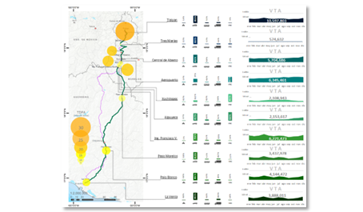

Análisis Geográfico
Un geógrafo es un profesional que estudia la relación entre la sociedad y el entorno físico,
analizando la distribución y organización espacial de los fenómenos naturales y humanos.
Para ello combina conocimientos de geografía, cartografía y tecnologías de información
para analizar y gestionar datos geográficos.
Investigación y Análisis
Estas son las principales acciones que realizo:
- Estudio la distribución y patrones espaciales de fenómenos naturales (clima, geología, hidrología) y humanos (población, economía, cultura)
- Análisis de datos geográficos utilizando técnicas estadísticas y herramientas de SIG (Sistemas de Información Geográfica)
- Investigación de campo para recopilar datos, homologación y limpieza
Investigación y Análisis
Análisis Geográfico
El análisis geográfico es una técnica utilizada para examinar y comprender las relaciones entre fenómenos geográficos, sociales, económicos, políticos y ambientales en un espacio y tiempo determinado
Para ello se utilizan teorías y métodos de ciencias complementarias y ramas de la geografía, enfocandose en:
- Localización: Identificar la ubicación de fenómenos y características geográficas
- Distribución: Estudiar la dispersión y patrones de los fenómenos en el espacio
- Relación: Analizar las conexiones entre variables geográficas y no geográficas
- Causalidad: Investigar las causas y efectos de los feómenos geográficos
Análisis de Datos Geográficos
Análisis de datos geográficos utilizando técnicas estadísticas y herramientas de análisis de datos tanto espaciales como no espaciales
Los datos geográficos son aquellos que cuentan con información sobre su presencia en la superficie terrestre y se presentan en estos tipos:
- Datos de localización: Coordenadas (geográficas, utm, etc.), direcciones, etc.
- Datos de atributos: Características de lugares, como clima, población, economía, infraestructura
- Datos de relación: Conexiones entre lugares, como distancia, límites, redes de transporte
- Datos temporales: Información que cambia con el tiempo, ya sea por epocas del año, estaciones, crecimiento demográfico
- Datos espaciales: Información sobre la representación de elementos en formas geometricas y patrones como puntos, líneas y polígonos
Trabajo de Campo
El trabajo de campo consiste en relaizar una serie de visitas al lugar de estudio para recopilar información y en gabinete complementar con la información recabada de bases de datos, fuentes de datos. Para ello se utilizan herramientas como:
- Equipos GPS (GLONASS, Galileo) ya sean navegadores, topográficos, estaciones totales.
- Fotografías las cuales evidencian aspectos físicos y sociales de la zona de estudio (muchas de ellas ya cuentan con ubicación)
- Muestreos con los cuales se realizan entrevistas y encuestas que levantan información de un área determinada a un cierto número de personas, ubicaciones, etc. muchos de estos ya son incorporados a aplicaciones tanto android como a softwares de navegación gps

Cartografía y Tecnología
Estas son las principales acciones que realizo:
- Diseño y creación de mapas temáticos y cartografía digital
- Utilización de tecnologías de información geográfica (SIG, GPS, etc.)
- Creación de modelos 3D y simulaciones geográficas
- Uso de Servidores y Bases de Datos Geoespaciales
Cartografía y Tecnología
Diseño y creación de mapas temáticos y cartografía digital
Se levantan requerimeitos de las variables que se quieren graficar en un mapa, ya sea una carta topográfica, un mapa temático, un croquis ó un mapa simple para exposición en presentaciones
se determina el tamaño del mapa impreso y digital, los elementos que se desean representar, así como el público o lugar donde será expuesto (cuestiones de diseño gubernamental, institucional, etc.)
Para mapas digitales se levanta la información que se requiere presentar así como las diferentes escalas de los dispositivos donde quiere ser representado, las plataformas y los servidores de visualización de mapas, así como la información que se requiere representar tanto en la simbología, como el tooltip
Tecnología Geográfica
Uso de Sistemas de Información Geográfica (SIG), CAD y GPS
- Utilizo SIG como herramienta de análisis, recopilación, procesasmiento de información y representación tanto de licencia como gratuitos como: ArcGIS, QGIS, Mapinfo, Google Earth, Mapa Digital
- Tambien utilizo CAD como Autocad para tratamiento de información
- Utilizo navegadores gps con modo recolector de datos y enlazamiento a diferentes sistemas de posicionamiento
Creaciones de modelos 3D y simulaciones geográficas
- Uso de tecnología, radar, lidar y TIN para representación de formas en 3D, realizando análisis de riesgos, de escorrentias, barreras físicas
- Se realizan simulaciones de inundaciones, así como la cantidad de energia solar en un área especifica para análisis agrícolas
Servidores y Bases de Datos Geoespacial
Los servidores y bases de datos geoespaciales son tecnologías que almacenan, gestionan y proporcionan acceso a datos geográficos, permitiendo su análisis y visualización
- Geoserver
- PostgreSQL (PostGIS)
- MongoDB

Desarrollo de Sistemas Geográficos
Para desarrollo en sistemas geográficos utilizi mi conocimiento en programación, bases de datos, análisis espacial y visualización, estas son las principales actividades que realizo:
- Desarrollo de herramientas de análisis, visualización, aplicaciones web y móviles
- Integración de SIG con otras tecnologías (GPS, Percepción Remota)
- Diseño e implementación de bases de datos geoespaciales
Planificación y Gestión
Estos son las proncipales actividades que realizo:
- Desarrollo de planes y políticas para el uso del suelo, recursos naturales y desarrollo urbano
- Evaluación de impacto ambiental y social de proyectos de infraestructura y desarrollo
- Gestión de recursos naturales (agua, bosques, suelo) y conservación de la biodiversidad
Consultoría y Asesoramiento
Estas son las principales actividades que realizo:
- Asesoramiento a empresas y organizaciones sobre ubicación, riesgos y oportunidades geográficas
- Asesoramiento y evaluación de necesidades a organizaciones sobre requisitos e implementación de SIG
Educación y Divulgación
Estos son los principales actividades que realizo:
- Enseñanza de geografía en instituciones educativas
- Creación de materiales educativos y recursos didácticos
- Divulgación de la geografía a través de medios de comunicación y eventos públicos